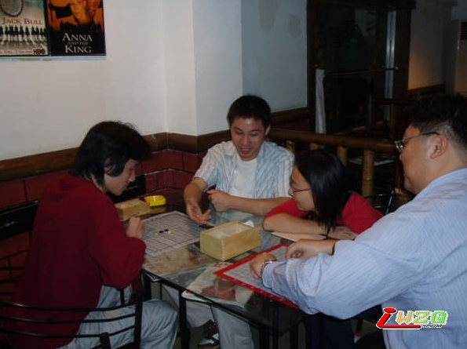
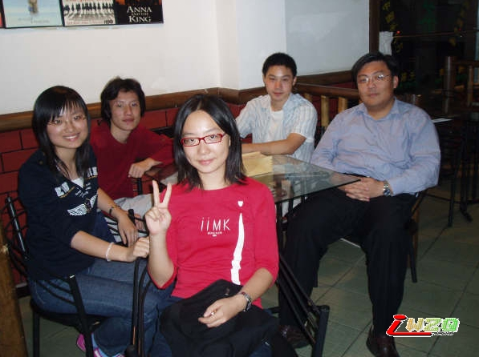

今天――哦不，昨天，是renju板聚的日子。我对连珠其实并不在行，连入门都谈不上，26种开局只知其名而不知其实；不过renju本就只是连珠爱好者的板面，棋艺高低并不重要，而且为了响应板主号召，我也就毫不犹豫报名了。
一点五十出现在徐汇校区正门北侧，远远就看到板二mm已经在石狮子边上等着了，不愧是斑竹，赞一个(板大别打我-.-)。唠嗑半晌，moumou mm出现，打招呼，寒暄，继续唠嗑。又唠了半晌，没人出现――哦不对，人是有的，来来往往不少人呢，可就是没有来板聚的。继续嗑，终于盼来了重磅人物renju。renju可是大大有名，他的事迹三天三夜也说不完，欲知详情请至renju板询问(其实我也不甚明了……为了避免出洋相，只好缄口:P)。又是等啊等，盼星星盼月亮总算把板大盼来了，于是从一开始的两个人唠嗑发展到五个人唠嗑-.-其实不是我们爱唠嗑，谁让板聚的人不齐呢，在此谴责一下爽约的，特别是爽约连个音信都没的！等了大半个小时，遂无奈离开校门前往茶坊开战。揭幕战由oki和SantaClaus对阵――其实我是被逼的，第一局棋，而且还有高手在旁观战，那个压力可不是一点点啊……幸好板二mm手下留情，让我胜了第一局，在此谢过~然后是renju和oki对弈，另一边moumou和wayww也摆上了棋。moumou mm似乎初入此道，板大一边下棋一边讲解，颇有师长风范。下了数局乏了，renju开始摆谱(咳咳……按照字面意思理解，非贬义……别想歪了)出题，其余四人像学生一样开始拆解，不过通常都是renju自揭迷底，还是水平不够啊，残念……就这样又下棋又拆题又摆定式，时间飞快的流逝，转眼就到晚饭时间了――被我们直接无视，继续下棋拆题摆定式-.-直到肚子饿得咕咕叫了，才收拾残局点菜腐败，席间继续闲聊扯淡。补充一句，话题基本不离学校之课程以及工作之艰辛，一群现实的人们啊，一群被万恶的教育制度毒害的孩子们啊……饭毕，似乎茶坊也快打烊了，草草对弈数局后便合影留念。之后各自散场，板聚取得了圆满的成功。
renju不愧是三段高手，三两个棋子一摆，大手一挥胜负立判，而且对于杀棋的计算特别准确，n(n>5)手叫杀轻轻松松就看出来了，这种功力我怕是别想达到了……顺便说一下，今天的茶水晚饭都是renju报告的，我脸皮厚没什么(-.-)，板二mm和moumou mm内疚了好一会儿，hoho。板大始终和和气气的样子，棋风也是温文尔雅的，不过总是在不经意间三两下就把对手撂倒了，我无数次迷迷糊糊地死在他的手下-.-板二mm相传高一就开始下五子棋，基本功扎实得很，开局两打定式都熟门熟路，我完全没有招架之功，只有她在练习没有拆过的变化的时候能够碰巧赢上一局……moumou mm印象不深，只记得她不停地感慨大物高数之难，可怜的mm啊……至于SantaClaus么，直接无视掉就可以了…
太阳光,金亮亮,我们来下棋~~虽然今天天气看起来比较适合户外运动,不过,显然是RENJU更有魅力,恩!今天来玩的有开版元老renju大哥,版大wayww学长,非常活跃的santaclaus学长版友,可爱的小学妹moumou恩,首先要非常郑重的向大家介绍renju,没有他就没有这个很小,人也不多,但是自由很快乐的地方.
版大大家都很熟悉吧,大好人一个(虽然有时候会说抓手手之类^^)santaclaus学长,上次的水源比赛他也参加了哦,不过MJ好像挺多阿,不知道大家能不能认出来?
至于我可爱的小学M,实在是讨人喜欢!
整个下棋、讨论的过程一共持续了5个多小时,不停地思考,计算,甚至是第六感,能用的都用上了~~~~不过收获也实在不少！
最后renju大哥还BG了我们这些XDXM~~~~~~~

下五子棋的也有美女啊?
以前不知道,以后我也要多下五子棋.!